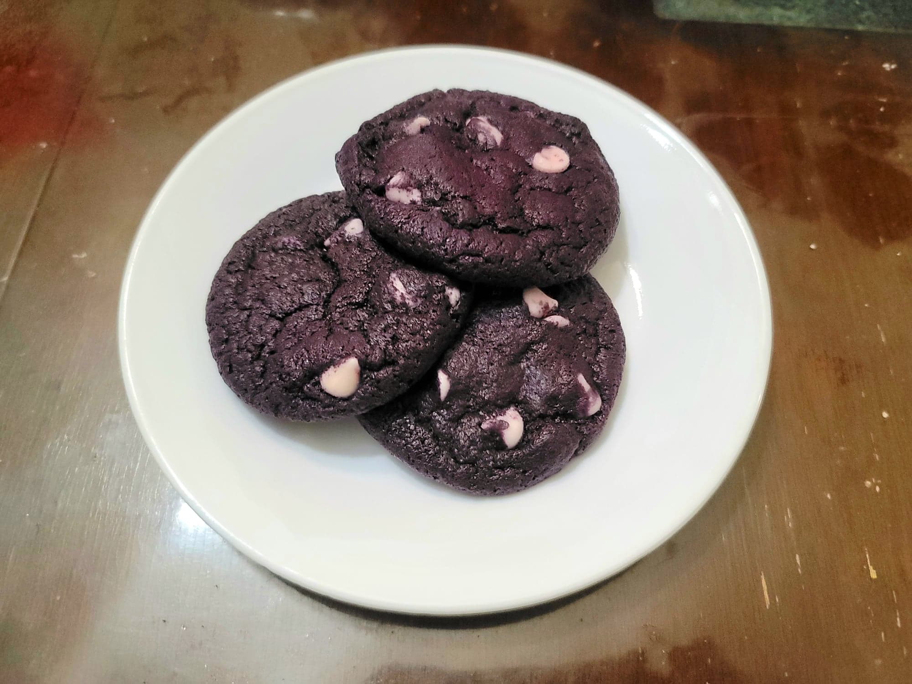

Ube White Chocolate Chip Cookies

Ingredients:
- 384 g Flour
- 1 tbsp Cornstarch
- 1 tbsp Baking powder
- 1 tsp Salt
- 1 cup Unsalted butter, room temperature
- 100 g Sugar
- 250 g Brown sugar
- 420 g Halaya
- 2 tbsp Ube extract
- 1 Egg + 1 Egg yolk
- 175 g White chocolate chips
Instructions:
- Add the flour, cornstarch, and baking powder and place it into a large bowl. Whisk to combine.
- Add the sugars and butter to a separate bowl and beat with an electric hand mixer to cream. Then add in the halaya and ube extract and cream again. Add in the egg and egg yolk and cream a final time.
- Add in the dry ingredients and beat until homogenous. Then fold in the white chocolate chips. Wrap the dough with plastic wrap and let chill in the fridge for at least 3 hours.
- Preheat an oven to 350 degrees Fahrenheit.
- Scoop 2 tbsp of dough and roll it into a ball. Place onto a baking sheet and repeat for the rest of the dough. Space the dough balls about 2 inches apart.
- Bake for 10-25 minutes, depending on how soft or firm you prefer the cookies. Remove from the oven. Optionally, immediately after removing from the oven, place a few extra chocolate chips on top of the cookies to decorate. Let cool completely before serving. They will firm up as they cool.